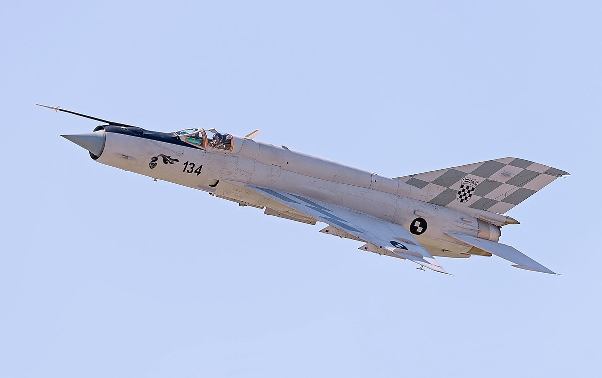

The
Mikoyan-Gurevich MiG-21 (Russian: Микоян и Гуревич МиГ-21; NATO reporting name: Fishbed) is a supersonic jet fighter and interceptor aircraft, designed by the Mikoyan-Gurevich Design Bureau in the Soviet Union.
It was popularly nicknamed "balalaika", from the aircraft's planform-view resemblance to the Russian stringed musical instrument or ołówek (English: pencil) by Polish pilots due to the shape of its fuselage.

Approximately 60 countries over four continents have flown the MiG-21, and it still serves many nations six decades after its maiden flight.
It made aviation records, became the most-produced supersonic jet aircraft in aviation history, the most-produced combat aircraft since the Korean War and previously the longest production run of a combat aircraft (now exceeded by both the McDonnell Douglas F-15 Eagle and General Dynamics F-16 Fighting Falcon).